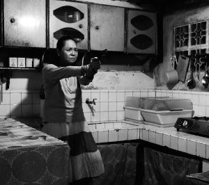

Ang Babaeng Humayo
The Woman Who Left

Lav DiazPH 2016 – 228 min – Tagalog
Golden Lion, Venice 2016
B+DOP+E: Lav Diaz – P: Ronald
Arguelles, Lav Diaz – D: Grandfilm – With Charo Santos-Concio, John Lloyd Cruz, Michael De Mesa, Nonie Buencamino
Diaz offers an
incisive study of the distance between rich and poor,
past and present in this tale of a woman who has spent nearly half
her life in a form of suspended animation. Released in 1997 after
spending 30 years in prison, Horacia encounters a very alien
world:
her husband has passed away and though she has reconnected with
her daughter, she cannot find her son. But she soon recognizes
what
hasn't changed: the power and privilege of the elites – a fact
that is
brought painfully home when she realizes that her aristocratic
former
lover, Rodrigo Trinidad, set her up for the crime for which she
was im
-
prisoned. Ironically, he is now something of a prisoner himself,
though
his cage is considerably more gilded: like his other rich friends,
he is
housebound due to a recent rash of kidnappings targeting the
wealthy.
While they are entirely irrelevant to Horacia and those she
befriends,
for the ruling class the kidnapping incidents represent the
greatest
crisis in the country's history. Horacia takes advantage of this
hysteria
as she begins to plot her revenge. (Steve Gravestock)
sunday 8 oct 6.30 p.m. filmmuseum münchen
Lav Diaz * in 1958 in Cotabato, Mindanao (Southern Philippines). He graduated in economics with a degree. Before venturing into making feature films he made some short films and documentaries. Since 1993, Lav Diaz has lived in Queens, New York City, with his family.
Filme Batang West Side 2002 – Evolution of a Filipino Family 2004 – (1. UX) – Heremias 2006 – Melancholia 2008 – Butterflies Have No Memories 2009 (5. UX) Norte, The End of the History 2013 (8. UX) – From What is Before 2014 (9. UX) – A Lullaby to the Sorrowful Mystery 2016 (11. UX)